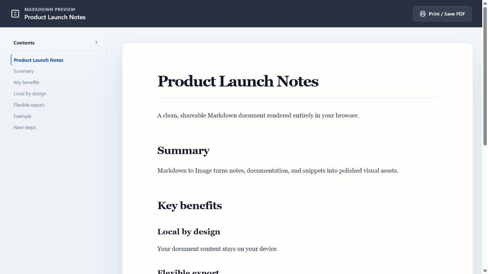

Real output · Version 2.0.0
One Markdown file. Four useful outputs.
The files on this page were generated from the same Markdown source using the extension's current export workflow. Download them, inspect the dimensions, and choose the format that fits your destination.
- Source
- 1 Markdown file
- Raster size
- 2400 × 3432 px
- Processing
- Local in Chrome
- Generated
- August 8, 2026
Primary evidence
The exported PNG
The extension renders the document to an 800-pixel-wide paper surface, then exports at 3× scale for a 2400-pixel-wide PNG.
This sample includes headings, a blockquote, a list, a code block, a table, and a privacy note so the output can be evaluated against common technical-writing content.
Download original PNG · 509 KB{kind=link}

Download and compare
Same layout, different containers.
PNG and JPG are raster files. The current SVG export preserves the same rendered image inside an SVG container; it is scalable as a placed image, but the document text is not converted into independently editable vector paths.
{kind=link}
{kind=link}
Reproducible input
The Markdown behind the image.
The source is intentionally short and self-contained. It does not use remotely hosted images, so the export does not need to request third-party media.
Paste this Markdown into the extension to reproduce the structure shown above.
# Markdown to Image — Release 2.0
> A private, local workflow for turning
> Markdown into shareable output.
## What you can export
- **PNG** for crisp screenshots and social posts
- **JPG** when a smaller raster file is useful
- **SVG** as a scalable image container
```js
const output = {
format: "png",
processing: "local",
accountRequired: false
};
```
Long-form option
Keep the document readable.
When an image is not the right format, open the Markdown in a focused browser tab. The preview adds a table of contents for headings and can be printed through Chrome.
See the PNG workflow →Free · Local · Account-free
Try the same source in your browser.
Install the extension, download the sample Markdown, and export the format that fits your workflow.